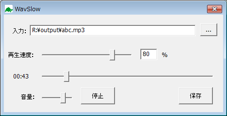

最終更新日：2012/12/27
音声ファイルをスロー再生／保存するソフトです。

【インストール方法】
ダウンロードした圧縮ファイルを任意のインストールしたいフォルダに解凍してください。
【アンインストール方法】
インストールしたフォルダをフォルダごと削除してください。
【起動方法】
インストールしたフォルダから「wavslow.exe」を実行してください。
【入力ファイルの選択】
「入力：」の右にある「...」ボタンをクリックしてファイルを選択してください。
テキストボックスに直接ファイルパスを入力してもかまいません。
エクスプローラからのドラッグアンドドロップにも対応しています。
【再生速度の設定】
「再生速度：」の隣のスライダーで再生速度を設定します。
【スロー再生】
「再生」ボタンをクリックすると設定した再生速度でスロー再生されます。
ボタンを押してから再生されるまでに変換を行うため多少の時間がかかります。
長いファイルほど待ち時間が長くなります。
【再生位置調整】
「00:00」の隣のスライダーで再生位置を調整できます。
【一時停止】
「停止」ボタンをクリックすると一時停止します。
続きから再生するには、「再生」ボタンをクリックします。
一時停止中にも再生位置の調整が可能です。
一時停止中に再生速度を変更すると、はじめから再生になります。
【音量調整】
「音量：」の隣のスライダーで音量を調整できます。
【保存】
「保存」ボタンをクリックして、保存ダイアログでファイル名を入力します。
スロー再生に変換した音声ファイルをwavファイルに保存できます。
保存形式は、stereo、16bit固定です。
サンプリングレートは入力ファイルと同一になります。
【終了】
ウィンドウ右上の「X」ボタンから終了します。
本ソフトウェアは無料で使用できるフリーソフトウェアです。
雑誌・ホームページ等への掲載、再配布時の連絡は不要です。
また、本ソフトウェアは使用した結果については、作者は一切責任を負えないためご了承ください。
意見・要望・感想・バグ報告は下記のメールアドレスで承ります。
趣味で作成しているソフトウェアのため、
要望、バグ報告をいただいても対応できるとは限りません。

ver 1.01 2012/12/23 バグ修正、機能微調整
ver 1.00 2012/12/12 初公開